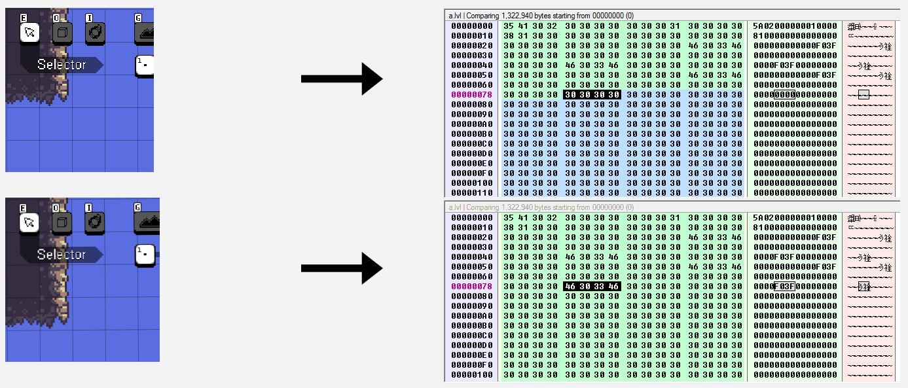
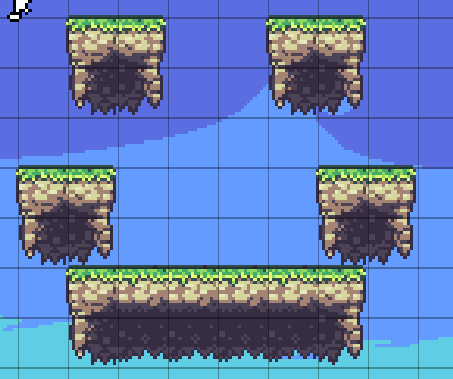
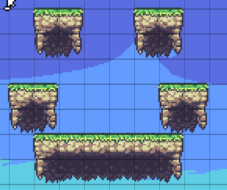

WaveLand is one of my favorite video games. One cool feature in the game is the level editor, which has been used to create some very innovative levels. These levels can be saved as files, which contain hexadecimal values organized in a tabular fashion. Since the files were in a readable format, it occurred to me that I might be able to create levels by editing the files directly, circumventing the in-game level editor.
I started small, with one empty level. I then made another level that had a small block of collision in the upper left, then a third where that block was slightly to the right, then one where it was moved slightly down, and so on. I then compared the differences between these files in a hex editor, and in so doing was able to divine a pattern behind how changes in collision placement correspond to hexadecimal values. Essentially, each time 1 block of collision is added, two bytes which would normally read as 00 00 are instead changed to F0 F3 (a change which results in a double precision number changing from 0 to 1, but that's not necessary to know). The location in the file where this change occurs is what dictates the position of the collision. What I found was that, in order to move a block of collision down 1 cell, the bytes F0 F3 would have to occur 12 bytes later in the file. To transpose collision 2 spaces down, therefore, would mean that the bytes F0 3F will occur 24 bytes later in the file, and so on. Changing a collision block's x value is essentially the same procedure. To traspose a block 1 cell to the right, one must edit the file such that F0 3F occurs 1548 bytes later. The x values 0-2 do not seem to follow this pattern, so I had to make exceptions for them, but otherwise things were fairly straightforward.
See below for an example of how changes in collision correspond to changes in level files. The highlighted portion of each file is different, signifying that the level below has additional collision.
Using this knowledge I was able to write a command line level editor in Python. Even if it's a little impractical, there is something about simple ASCII graphics that I find very pleasing.
 

The O's represent collision, C represents the cursor, X represents an out-of-bounds area, and S represents the player spawn position